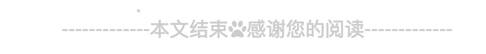

目录解析
默认目录结构：
1 | ├── .deploy |
next主题：
1 | ├── .github #git信息 |
站点配置文件
基础设置
1 | title: TJL的博客 |
链接设置
1 | url: http://www.tjl-myblog.cn |
目录设置
1 | source_dir: source |
书写相关配置
1 | new_post_name: :title.md # File name of new posts |
分类标签设置
1 | default_category: uncategorized |
主题配置
1 | theme: next 这里使用的是next主题 当然也有其他主题 |
部署配置
1 | deploy: |
实用性优化
浏览页面的时候显示当前浏览进度
打开themes/next/_config.yml搜索关键字scrollpercent把false对划线true
1 | # Scroll percent label in b2t button |
如果想把top按钮放在侧边栏，打开themes/next/_config.yml搜索关键字b2t，把false对划线true
1 | # Back to top in sidebar |
添加标签、分类等页面
修改主题配置
1 | # --------------------------------------------------------------- |
可根据自己的喜欢来设置显示哪一些 第一次设置需要新建一些页面
1 | hexo new page tags 新建标签页面 |
新建之后要对站点根目录/source/categories和站点根目录/source/tags的index.md标签和分类页面进行进行一些修改 不修改的话 后面文章在生成静态网页的时候标签和分类会出现问题 看不到的情况
1 | 分类页面 类型要改为`type: "categories"` |
添加RSS
首先安装 hexo-generator-feed插件。
再到站点根目录右键打开Git Bash，安装插件：$ npm install --save hexo-generator-feed
修改站点配置文件，在最后添加以下代码：
1 | feed: # RSS订阅插件 |
修改主题配置文件如下：
1 | # Set rss to false to disable feed link. |
实现效果：
设置网站icon
主题配置文件中第一行代码就是网站icon设置，这里需要找到你喜欢的logo把它制作成ico格式然后改名favicon.ico，放到/themes/next/source/images下面即可。
1 | # Put your favicon.ico into `hexo-site/source/` directory. |
打赏
增加打赏配置
准备支付宝二维码alipay.jpg和微信二维码wechatpay.jpg
把两张图片放入themes/next/source/images中
修改next主题配置_config.yml
1 | wechatpay: /images/wechatpay.jpg |
修复煽动bug
1 | /* 注释文字闪动函数 |
修改 next/source/css/_common/components/post/post-reward.styl
1 | 注释:wechat:hover和alipay:hover |
博客文章宽度优化
Next.Mist 宽度优化
打开 \themes\next\source\css\_common\components\post\post-expand.styl 文件，找到
1 | @media (max-width: 767px) |
改为
1 | @media (max-width: 1080px) |
打开 \themes\next\source\css\ _variables\base.styl 文件，找到
1 | $main-desktop = 960px |
修改 $main-desktop 和 $content-desktop 的数值：
1 | $main-desktop = 1080px |
Next.Pisces宽度优化
Next.Pisces宽度优化是在Next.Mist 宽度优化设置的前提下进行改动的
打开 \themes\next\source\css\_schemes\Pisces\_layout.styl 文件，将第 4 行的 width改为1080px ，修改后如下：
1 | .header { |
NexT.Gemini宽度优化
6.0 版新版 NexT.Gemini主题，可以在主题配置文件中设置max_content_width: 65%即可设置宽度。
在\next\source\css\_variables custom.styl 文件里添加：
1 | $content-desktop = 'calc(100% - %s)' % unit($content-desktop-padding / 2, 'px') |
添加侧边栏社交链接
修改主题配置文件的社交链接和对应图标：
1 | social: # 添加你的社交账号链接 |
图标库
在库里面找到复制名字添加到后面即可
效果：
添加侧边栏友情链接
修改主题配置文件：
1 | links_icon: link #图标库图标 |
效果：
底部显示建站时间和图标修改
修改主题配置文件：
1 | # Specify the date when the site was setup |
效果：
设置第三方JS库
在主题配置文件中设定成合适的 CDN 地址，此特性可以加速静态资源（JavaScript 第三方库）的加载
1 | # Script Vendors. |
追加评论功能
NexT支持的第三方的评论系统有很多，不过不少已经关闭不再可用了，而且对于国内来说比较友好的现在应该就只有来必力，当然喜欢折腾的小伙伴可以尝试一下其他的或者自建评论系统。最简单可行的方案，也就是来必力。
获取来必力id：
登陆 来必力 注册获取。（这里要注意，这个韩国的系统注册啥的真的太慢了，所以要记住不要耐不住关闭页面或者狂刷新，耐心等待就好。闲慢的朋友可以自行备梯子哦 后面会更新相关梯子的教程）
注册后点击导航上边的安装，选择免费的city版本：点击现在安装后填入网站的一些信息就可以获取到安装代码，框中的就是你的来必力id：
复制上边的id，在主题配置文件里面搜索livere_uid，在后面添加来必力id即可：
1 | # Support for LiveRe comments system. |
另外可以点击用户头像进入管理界面个性化你的评论系统
效果：
这里添加了之后要注意每篇文章的开头记得添加comments： 设置为true 表示开启评论功能 后面会讲到怎么利用 Hexo new 命令快捷创建文章格式
文章字数统计 阅读时长 文章访问量
在主题配置文件中，搜索wordcount，设置为下面这样就可以了
1 | # Post wordcount display settings |
再打开\themes\next\layout\_macro\post.swig文件，在leancloud-visitors-count后面位置添加一个分割符（空格即可）
再把不蒜子统计功能打开 主题配置
1 | # 不蒜子统计功能 |
统计站点访问量 字数统计
找到站点的themes/next/layout/_partials目录下的footer.swig文件。添加以下代码
1 | <!-- 新增访客统计代码 --> |
如果增加了 ‘ 新增访客统计代码’这个可以下面一步忽略 如果都设置的话会出现两个统计字数的
在/themes/next/layout/_partials/footer.swig文件endif %}前加上下面代码可以实现在站点底部统计全站字数：
1 | <div class="theme-info"> |
如果无法显示可能是
hexo-wordcount插件没有安装，git bash在网站根目录安装一下就可以：$ npm install hexo-wordcount --save
增加版权信息
在目录themes/next/layout/_macro/下添加my-copyright.swig（这是一个自定义文件）
1 | {% if page.copyright %} |
在目录themes/next/source/css/_common/components/post/下添加my-post-copyright.styl （自定义文件）
1 | .my_post_copyright { |
修改themes/next/layout/_macro/post.swig在代码:
1 | {% if theme.wechat_subscriber.enabled and not is_index %} |
前面添加代码：
1 | <div> |
修改themes/next/source/css/_common/components/post/post.styl文件，在最后一行增加代码：
1 | @import "my-post-copyright" |
最后到站点根目录/scaffolds/post.md，在两个—中间增加一行(为的就是使用Hexo new 命令创建的文章自带版权模板)：
1 | copyright: true |
之后的每一篇文章都会自己加上版权信息，之前的文章也可以通过在文章对应的md文件头部加上以上代码添加版权信息
添加分享文章功能
这里我使用的是AddThis(因为他的样式让我觉得很棒 这里注册要使用梯子哦)
注册之后找到这里
复制uid
在主题配置文件中搜索add_this_id，去掉前面的注释，添加上你的AddThis ID就可以了。
1 | # Share 分享 |
样式配置
然后就可以进行图标分享配置了 配置完之后要点激活工具就可以了
各种不同的样式看你们习惯啦 如果觉得不好的也可以使用其他分享工具 也比较多 这里就不讲解了 有兴趣的朋友可以百度试试哦
添加文章评分功能
通过widgetpack来给网站每篇文章添加评分系统，效果如下：
首先注册账号，添加新站点，填入网站名称和域名地址，点击添加：
获取id：
复制下来到主题配置文件中搜索widgetpack添加即可:
1 | # Star rating support to each article. |
这里建议设置为按ip地址记录评分，比较方便(不用登陆即可评分 相当于ip替代了登陆这个工作)：
文章排序优先级设置
修改hero-generator-index插件，把文件node_modules/hexo-generator-index/lib/generator.js内的代码替换为：
1 | ; |
在\scaffolds\post.md头部—中添加以下代码：
1 | top: number |
以后新建文章就可以给文章的top赋值，number越大优先级越高。
已经写好的文章在对应的md文件头部添加top：number即可
置顶图标
用上面的方法给文章置顶之后再给文章添加 sticky: true 即可实现置顶图标
修改图标大小 \themes\next\source\css\_custom\custom.styl 中添加一个css 既可设置他的大小 也可以更改颜色等信息
1 | .post-sticky-flag{ //置顶图标的大小css |
添加站内搜索功能
这里使用的是Algolia
前往Algolia注册页面，注册一个新账户。可以使用GitHub或者Google账户直接登录，注册后的14天内拥有所有功能（包括收费类别的）。之后若未续费会自动降级为免费账户，免费账户总共有10,000条记录，每月有100,000的可以操作数。注册完成后，创建一个新的Index，这个Index将在后面使用。（有新手引导）
Index创建完成后，此时这个Index里未包含任何数据。接下来需要安装Hexo Algolia扩展，这个扩展的功能是搜集站点的内容并通过API发送给Algolia。前往站点根目录，执行命令安装：npm install --save hexo-algolia
找到新建的Index对应的Key复制下面的App ID和API Key
同时修改权限:
在站点配置文件（注意是站点配置文件）末尾，新增配置代码：
1 | #添加搜索 |
在站点根目录执行以下代码，更新Index(每次更新文章都需要执行一次)，即上传站点内容到algolia：
1 | export HEXO_ALGOLIA_INDEXING_KEY='你的adminApiKey' (这里好像 = 号左右两边不能有空格 这里要注意) |
更改主题配置文件，搜索algolia_search：
1 | # Algolia Search |
顺序
hexo + clean --> hexo + g --> hexo + d --> export HEXO_ALGOLIA_INDEXING_KEY='你的adminApiKey' --> hexo algolia
如果按照新手指导创建的algolia指数没有用 就删除自己新建一个 一切默认即可 如果还是不行欢迎下方评论或联系我
在线联系
首先去DaoVoice注册。注册后就可以查看你的app_id:
复制app_id，打开/themes/next/layout/_partials/head.swig写下如下代码：
1 | {% if theme.daovoice %} |
接着打开主题配置文件，在最后写下如下代码：
1 | # Online contact |
具体样式设计可以在 应用设置–>聊天设置后边改
给代码块添加复制功能
下载clipboard.js
下载第三方插件：clipboard.js,或者直接下载(右键另存为)。
保存文件到theme/next/source/js/src下 没有文件夹就创建文件夹。
在theme/next/source/js/src目录下创建clipboard-use.js添加内容如下：
1 | /*页面载入完成后，创建复制按钮*/ |
在theme/next/source/css/_custom/custom.styl样式中添加如下代码：
1 | //代码块复制按钮 |
在themes/next/layout/_layout.swig文件中最后添加：
1 | <!-- 代码块复制功能 --> |
或者将clipboard.min.js和clipboard-use.js保存到类似七牛云上，通过引用也可（推荐）
设置默认文章格式
在/scaffolds/post.md下修改为以下代码 顺序可以改 这样每次用hexo new 的文章都会是这种格式开头的了(默认文章格式)
1 |
|
个性化优化
设置代码高亮主题
NexT 默认使用的是 normal 主题，可选的值有 normal，night， night blue， night bright， night eighties：
1 | # Code Highlight theme |
设置字体
在主题配置文件中设置，例如：
1 | font: |
设置小型代码块颜色
修改\themes\next\source\css\_variables\base.styl文件，修改$code-background和$code-foreground的值：
1 | // Code & Code Blocks |
文字增加背景色块
打开themes/next/source/css/_custom 下的 custom.styl 文件,添加属性样式
1 | // 颜色块-黄 |
在你需要编辑的文章地方。放置如下代码
1 | <span id="inline-blue"> 站点配置文件 </span> |
效果：
在文档中增加图标, Font Awesome
代码
单一使用：
1 | <i class="fa fa-adjust fa-lg"></i> fa-表示图标的名字 |
组合使用：
1 | <span class="fa-stack fa-lg"> |
效果：
单一使用：
1 | <i class="fa fa-adjust fa-lg"></i> fa-表示图标的名字 |
组合使用：
1 | <span class="fa-stack fa-lg"> |
利用Font Awesome绘制下载样式
打开themes/next/source/css/_custom 下的 custom.styl 文件,添加属性样式
1 | a#download { |
在你需要编辑的文章地方。放置如下代码<a id="download" href="下载链接"><i class="fa fa-download"></i><span> Download Now</span> </a>
利用Aplayer添加音乐播放器
首先将Aplayer源码下载到本地，解压后将dist文件夹复制到themes\next\source文件夹下
新建themes\next\source\dist\music.js文件，添加内容：
1 | const ap = new APlayer({ |
打开themes\next\layout\_layout.swig文件，将
1 | <link rel="stylesheet" href="/dist/APlayer.min.css"> |
添加到<body itemscope ...>后面就行，即在<body></body>里面。
重新生成，访问页面，就能看到左下角的音乐播放器了
添加音乐：audio对应的便是音频文件，所以音乐播放器需要播放的音乐是需要自己进行相关信息（如歌曲链接、封面等）的配置。这里放一个mp3音乐外链网站搜索对应的音乐，然后复制url和右击封面图片链接粘贴到对应的位置上就行了。
左上角或右上角的Github样式
实现效果有两种(效果可点击样式链接查看这里就不演示效果图了)：
样式1
样式2
在喜欢的网站上复制其中的代码到themes/next/layout/_layout.swig文件中放在<div class="headband"></div> 的下面，并把href改为你的github地址就好了
添加背景动画
NexT已经自带了多种背景动画效果，你只需要根据需求在主题配置文件修改其中一个为true即可 想要什么效果自己可以每个试试看。
1 | # Canvas-nest |
其中之一实现效果：
添加顶部加载条
在主题配置文件中搜索pace：
1 | # Progress bar in the top during page loading. 加载条 |
这个也有多种主题选择，根据自己喜好选择修改即可
点击出现小爱心效果
在/themes/next/source/js/src新建clicklove.js文件，复制
1 | ! function (e, t, a) { |
然后打开\themes\next\layout\_layout.swig文件,在末尾（在前面引用会出现找不到的bug）添加以下代码：<script type="text/javascript" src="/js/src/love.js"></script>
修改文章内链接文本样式
修改文件 \themes\next\source\css\_custom\custom.styl 在末尾添加如下css样式：
1 | // 文章内链接文本样式 |
修改文章底部标签样式
修改/themes/next/layout/_macro/post.swig搜索 rel="tag">#，将 # 换成<i class="fa fa-tag"></i>
实现效果图:

在每篇文章末尾统一添加“本文结束”标记
实现效果图:

在路径 \themes\next\layout\_macro 中新建 passage-end-tag.swig 文件,并添加以下内容：
1 | <div> |
接着打开\themes\next\layout\_macro\post.swig文件，在<div class="post-block"></div>中 末尾添加
1 | {#感谢阅读#} |
位置可以根据自己喜欢调整(我的就是放在最后面的)，然后打开主题配置文件（_config.yml）,在末尾添加：
1 | # 文章末尾添加“本文结束”标记 |
设置圆形头像以及旋转效果
打开\themes\next\source\css\_common\components\sidebar\sidebar-author.styl
在里面添加如下代码
1 | .site-author-image { |
如果设置完之后出现名字没居中
需要到themes\next\layout\_macro\sidebar.swig文件中找到site-author-name那一行修改为<p class="site-author-name" itemprop="name" style ="text-align: center;"></p>
文章添加阴影效果
打开\themes\next\source\css\_custom\custom.styl向里面加入：
1 | // 主页文章添加阴影效果 |
代码块自定义样式
1 | // Custom styles. |
隐藏网页底部powered By Hexo 强力驱动
打开themes/next/layout/_partials/footer.swig隐藏之间的代码即可，或者直接删除。
1 | <!-- 第一个地方 {% if theme.footer.powered %} |
文章加密访问
打开themes->next->layout->_partials->head.swig文件,在以下位置插入下面代码
1 | <script> |
然后在要加密的文章---中间添加password:xxx xxx就是你的密码 不写就没有密码
文章顶部显示更新时间
打开主题配置文件_config.yml，关键字搜索updated_at设置为true：
1 | # Post meta display settings |
编辑文章，增加关键字updated（下一个可以根据文章改变时间自动更改）
1 | layout: layout |
崩溃欺骗
在新建themes\next\source\js\src新建文件crash_cheat.js代码如下
1 | var OriginTitle = document.title; |
在themes\next\layout\_layout.swig文件最后添加如下代码
1 | <!--崩溃欺骗--> |
博客性能优化
gulp压缩
如果你打开生成的public文件夹里面的html、css、js源文件，你就会发现里面有大段的空白，这些空白占据着一定的空间。gulp是一个基于Node.js的自动化构建工具，我们可以通过一些gulp插件实现对html、css、js、image等静态资源的高效压缩，通过压缩这些静态资源，可以减少请求的数据量从而达到优化博客访问速度的目的
首先安装gulp，执行以下命令：
1 | npm install gulp |
要实现gulp压缩需要安装以下五个模块：
1 | gulp-htmlclean // 清理html |
安装模块
1 | npm install gulp-htmlclean gulp-htmlmin gulp-minify-css gulp-uglify gulp-imagemin --save |
安装的模块可以在根目录下的package.json文件里面看到。
1 | "gulp": "^4.0.0", |
添加gulpfile.js
进入博客根目录，新建gulpfile.js文件，内容如下：
1 | var gulp = require('gulp'); |
执行压缩（在每次生成部署的时候就要压缩一次）
1 | gulp //执行压缩 |
gulp4.0报错 参考的第三个方案
在Hexo根目录打开命令行窗口
顺序总结为hexo + clean --> hexo + g --> gulp --> hexo + d --> export HEXO_ALGOLIA_INDEXING_KEY='764398dfb571b51f25f584fd5f03944b'(你的adminApiKey 这个是我的) --> hexo algolia如果没有添加搜索的后面两句可以省略 很久没使用可能需要用key来回执行export HEXO_ALGOLIA_INDEXING_KEY=’key’添加才会成功 如果还是不行则npm install --save hexo-algolia更新下algolia即可（推送搜索要翻墙） 不知道什么原因 Algolia不能在VSCode的终端输入命令。algolia如果搜索没有生效就挂梯子多执行几遍最后两步即可 2019-5-10因为 images 路径修改到了远程服务器，所以需要每次把 images 文件压缩zip移到服务器进行unzip进行解压，目前没有服务器image暂时看不见。
window 系统下安装了 gulp 后遇到 bash: gulp: command not found 这个问题的解决方法
或者重新安装一次gulp模块即可
待更新
全部参考如下:
hexo搭建个人博客–NexT主题优化
Hexo+NexT 主题配置备忘
hexo的next主题个性化教程：打造炫酷网站
HEXO +下一步个人博客主题优化
Hexo博客之速度优化
基于Hexo搭建个人博客优化之（五）压缩篇–gulp4.0压缩静态资源